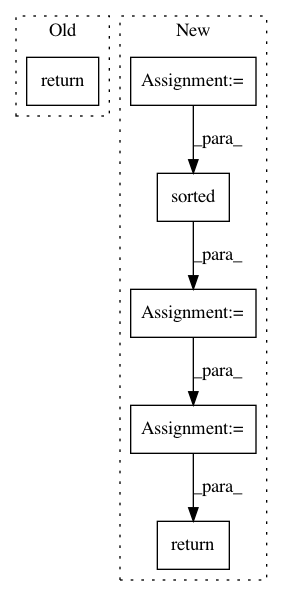

dd2eaf6c174fdd757514bc06d1063e5f9c6bb4a0,torchnlp/samplers/noisy_sorted_sampler.py,NoisySortedSampler,__iter__,#NoisySortedSampler#,44
Before Change
self.sorted_indexes = [item[0] for item in zip_]
def __iter__(self):
return iter(self.sorted_indexes)
def __len__(self):
return len(self.data)
After Change
self.get_noise = get_noise
def __iter__(self):
zip_ = []
for i, row in enumerate(self.data):
value = self.get_noise(row) + self.sort_key(row)
zip_.append(tuple([i, value]))
zip_ = sorted(zip_, key=lambda r: r[1])
return iter([item[0] for item in zip_])
def __len__(self):
return len(self.data)
In pattern: SUPERPATTERN
Frequency: 3
Non-data size: 6
Instances
Project Name: PetrochukM/PyTorch-NLP
Commit Name: dd2eaf6c174fdd757514bc06d1063e5f9c6bb4a0
Time: 2019-10-20
Author: petrochukm@gmail.com
File Name: torchnlp/samplers/noisy_sorted_sampler.py
Class Name: NoisySortedSampler
Method Name: __iter__
Project Name: OpenNMT/OpenNMT-py
Commit Name: 685126644ae540be72eb662527269a0395e2c9eb
Time: 2017-09-05
Author: bpeters@coli.uni-saarland.de
File Name: onmt/IO.py
Class Name:
Method Name: make_features
Project Name: microsoft/nni
Commit Name: 55b557f17385ca10b8a3e8fb8bbb0d3799906db5
Time: 2019-11-20
Author: 38930155+chicm-ms@users.noreply.github.com
File Name: src/sdk/pynni/nni/compression/tensorflow/builtin_pruners.py
Class Name: FPGMPruner
Method Name: _get_min_gm_kernel_idx